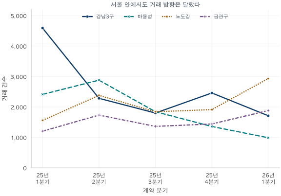
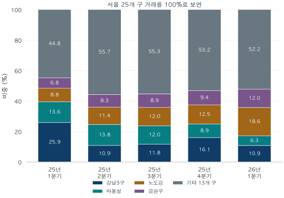
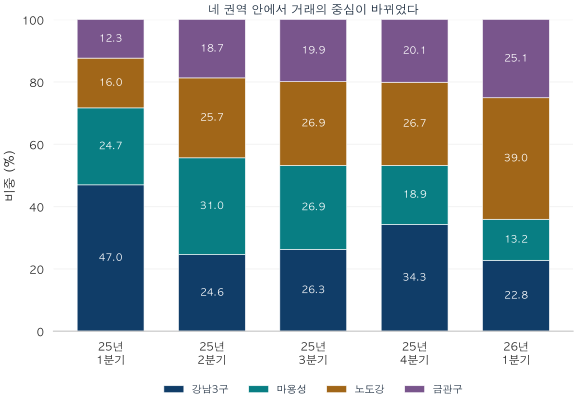

서울 아파트 · 실거래 데이터 노트
서울 거래가 늘었는데, 강남3구는 왜 줄었을까?
토지거래허가구역 확대 이후 강남3구·마용성·노도강·금관구의 거래가 어떻게 달라졌을까요? 두 가지 지역 비중과 대출한도별 가격 구간, 2026년 1분기까지 살펴봅니다.
분석 기간 · 2025년 계약 · 2026년 1분기 후속 관측 | 보유 자료 스냅샷 생성 · 2026-10-04
2025년 봄, 서울 아파트 거래의 중심이 움직였습니다. 2분기 서울 전체 거래는 전 분기보다 18.3% 늘었지만, 강남·서초·송파의 거래는 절반 넘게 줄었습니다. 같은 시기에 같은 서울을 보고도 동네마다 시장을 다르게 느낄 만한 변화입니다.
허가구역이 다시 넓어진 봄
2월 잠실·삼성·대치·청담의 일부 아파트에서 토지거래허가구역 지정이 해제된 뒤, 3월에는 강남3구와 용산의 전체 아파트 등으로 허가구역이 확대됐습니다. 3월 19일 발표한 조치는 3월 24일부터 효력이 발생했습니다. 주택을 사기 전에 허가를 받고 실거주 목적에 맞춰 이용해야 하는 범위가 다시 넓어진 것입니다.
이렇게 거래 조건이 바뀌는 시기에는 서울 합계 다음으로 지역의 흐름을 살펴볼 필요가 있습니다. 강남3구는 강남·서초·송파, 마용성은 마포·용산·성동, 노도강은 노원·도봉·강북, 금관구는 금천·관악·구로를 뜻합니다. 익숙한 네 권역을 따라가며 거래가 어디에서 늘고 줄었는지 보겠습니다.

서울 전체는 1분기 17,699건에서 2분기 20,939건으로 늘었습니다. 강남3구는 4,592건에서 2,284건으로 50.3% 줄었지만, 마용성은 19.3%, 노도강은 52.4%, 금관구는 43.9% 증가했습니다. 나머지 13개 구도 47.1% 늘었습니다. 봄철 거래 증가의 무게중심이 강남3구 바깥으로 옮겨간 모습입니다.
정책 경계에 맞춰 보면 차이는 더 선명합니다. 강남3구의 하루 평균 거래는 부분 해제 이후인 2월 13일~3월 23일 88.2건에서, 확대 지정 이후인 3월 24일~6월 27일 23.2건으로 줄었습니다. 같은 두 구간에서 노도강은 23.3건에서 25.8건으로, 금관구는 18.4건에서 18.8건으로 소폭 늘었습니다. 강남3구의 높은 거래 속도가 꺾이는 동안 다른 권역의 활동은 이어졌습니다.
허가 절차와 실거주 조건은 구매 가능한 수요와 계약 시점에 영향을 줄 수 있습니다. 다만 이 집계는 매수자가 어느 지역에서 다른 지역으로 이동했는지까지 추적하지 않습니다. 지역별 가격대·주택 구성과 봄철 거래 여건도 함께 작용하므로, 여기서는 거래 활동이 서로 다른 방향으로 움직였다는 점에 주목합니다. 마용성 안에서도 용산은 3월 확대 대상이어서 세 구의 정책 조건이 모두 같지는 않습니다.
서울 전체에서 차지하는 몫

| 계약 분기 | 강남3구 | 마용성 | 노도강 | 금관구 | 기타 13구 | 서울 합계 |
|---|---|---|---|---|---|---|
| 2025년 1분기 | 4,59225.9% | 2,41513.6% | 1,5628.8% | 1,2056.8% | 7,92544.8% | 17,699 |
| 2025년 2분기 | 2,28410.9% | 2,88113.8% | 2,38111.4% | 1,7348.3% | 11,65955.7% | 20,939 |
| 2025년 3분기 | 1,80211.8% | 1,84512.0% | 1,84312.0% | 1,3638.9% | 8,46655.3% | 15,319 |
| 2025년 4분기 | 2,46116.1% | 1,3608.9% | 1,91512.5% | 1,4429.4% | 8,14553.2% | 15,323 |
| 2026년 1분기 | 1,71210.9% | 9906.3% | 2,93318.6% | 1,88412.0% | 8,22452.2% | 15,743 |
강남3구의 서울 내 비중은 2025년 1분기 25.9%에서 2분기 10.9%로 낮아졌습니다. 기타 13개 구는 44.8%에서 55.7%로 높아졌습니다. 거래의 절반 안팎이 네 권역 밖에서 일어나므로, 서울 시장의 전체 크기를 파악할 때는 이 나머지 지역까지 함께 봐야 합니다.
네 권역만 놓으면 보이는 중심 이동

| 계약 분기 | 강남3구 | 마용성 | 노도강 | 금관구 | 네 권역 합계 |
|---|---|---|---|---|---|
| 2025년 1분기 | 47.0% | 24.7% | 16.0% | 12.3% | 9,774 |
| 2025년 2분기 | 24.6% | 31.0% | 25.7% | 18.7% | 9,280 |
| 2025년 3분기 | 26.3% | 26.9% | 26.9% | 19.9% | 6,853 |
| 2025년 4분기 | 34.3% | 18.9% | 26.7% | 20.1% | 7,178 |
| 2026년 1분기 | 22.8% | 13.2% | 39.0% | 25.1% | 7,519 |
2025년 1분기에는 네 권역 거래의 47.0%가 강남3구에 모였습니다. 2분기에는 그 몫이 24.6%로 줄고, 마용성이 31.0%로 가장 커졌습니다. 네 권역 안에서 거래의 중심이 재편됐다는 사실을 더 가까이서 볼 수 있습니다.
시선을 2026년 1분기까지 옮기면 노도강의 비중이 39.0%로 가장 높아집니다. 실제 건수도 전 분기 1,915건에서 2,933건으로 늘었습니다. 반면 강남3구는 2,461건에서 1,712건으로 줄었습니다. 서울 합계는 15,323건에서 15,743건으로 비슷한 규모를 유지했지만, 그 안에서 활발히 거래된 지역은 달라졌습니다.
대출한도가 6억·4억·2억으로 나뉘면 거래도 달라질까?
6·27 대책은 수도권·규제지역 주택구입 목적 주담대에 최대 6억 원 한도를 도입했습니다. 10·15 대책에서는 시가 15억 원 이하 6억 원, 15억 초과~25억 이하 4억 원, 25억 초과 2억 원으로 한도가 달라졌습니다. 집값이 높을수록 대출로 충당할 수 있는 상한이 낮아지는 구조입니다.
이 경계에 맞춰 서울 거래가격을 세 구간으로 묶었습니다. 기간 길이가 달라 건수는 하루 평균으로 비교합니다. 앞서 살펴본 지역별 변화가 가격대별 활동과도 맞물리는지 확인하는 표입니다.
| 거래가격 | 2025 3/24~6/27 | 2025 6/28~10/15 | 2025 10/16~12/31 | 2026 1/1~3/31 |
|---|---|---|---|---|
| 15억 이하 | 170.03 | 146.85 | 98.47 | 142.24 |
| 15억 초과~25억 이하 | 40.92 | 33.34 | 22.90 | 23.67 |
| 25억 초과 | 14.96 | 9.98 | 12.01 | 9.01 |
6·27 대책 이후 구간에는 세 가격대의 일평균이 모두 낮아졌습니다. 이어 10월 16일~연말에는 15억 이하가 146.85건에서 98.47건으로, 15억 초과~25억 이하가 33.34건에서 22.90건으로 줄었습니다. 반면 25억 초과는 9.98건에서 12.01건으로 늘었습니다. 대출한도가 가장 크게 낮아진 가격대에서도 연말까지 계약은 이어졌던 셈입니다.
2026년 1분기에는 방향이 다시 갈립니다. 15억 이하가 142.24건으로 회복하는 동안 25억 초과는 9.01건으로 줄었습니다. 지역 표에서 본 노도강·금관구의 거래 확대와 함께, 연말의 고가 중심 모습이 이듬해까지 그대로 이어지지는 않았음을 보여줍니다. 두 표는 지역과 가격대를 각각 나눠 본 것이므로, 어느 지역의 어떤 가격대가 늘었는지는 더 세밀한 집계로 확인할 수 있습니다.
대출한도는 구매 여건을 바꾸는 중요한 배경이지만 실제 대출심사는 시가·소득·기존 부채와 경과규정에 따라 달라집니다. 이 표의 거래가격 구간은 시장의 반응을 읽는 관찰 창입니다. 개별 계약에 어떤 한도가 적용됐는지, 거래 변화 중 얼마가 정책 때문인지는 별도 자료가 필요합니다.
내가 보는 동네는 어느 흐름에 가까울까요?
관심 지역의 거래 건수와 서울 내 비중을 함께 살펴보세요. 건수는 실제 계약 활동의 크기를, 비중은 다른 지역과 비교한 위치를 보여줍니다. 여기에 내 예산과 가까운 가격대의 흐름을 더하면 ‘서울이 뜨겁다’는 말보다 구체적인 시장의 모습을 그릴 수 있습니다.
분석 방법·출처·집계 내려받기
분석에 사용한 거래
국토교통부 아파트 매매 실거래가 상세 자료에서 서울 25개 구의 2025년과 2026년 1분기 계약을 집계했습니다. 전용면적 전체를 포함하고 신고일·등기일이 아닌 계약일로 묶었습니다. 중복 병합 후 식별된 해제·직거래, 토지임대부와 정제상 부적격 관측을 제외했습니다. 2025년은 병합 후 77,887건 중 69,280건, 2026년 1분기는 16,758건 중 15,743건을 포함합니다. 공식 전체 거래량 통계와는 포함 기준이 다릅니다.
자료의 기준 시점
2026년 9월 계약분까지 보유한 자료로 2026년 10월 4일 생성한 스냅샷을 사용했습니다. 당시 실시간으로 알 수 있었던 거래량을 복원한 자료는 아닙니다. 이후 신고·정정·해제 반영에 따라 값은 달라질 수 있습니다. 원천의 최신 월인 2026년 9월은 잠정 관측이며 본문 분석에 포함하지 않았습니다.
분모와 가격대
지역 비중은 두 가지입니다. 서울 전체 비중은 25개 구의 거래 건수를, 네 권역 내부 비중은 강남3구·마용성·노도강·금관구 12개 구의 합산 건수를 각각 100%로 둡니다. 두 그래프의 분모를 제목·설명에 구분했습니다. 지역별 재고 세대수로 나눈 회전율은 아닙니다.
다섯 거래가격 구간은 6억 이하, 6억 초과~9억 이하, 9억 초과~15억 이하, 15억 초과~25억 이하, 25억 초과입니다. 경계값은 아래쪽 구간에 포함합니다. 대출한도와 나란히 보는 세 구간 표에서는 앞의 세 가격대를 15억 이하로 합쳤습니다. 실제 대출 규제의 가격 기준은 시가여서 개별 계약의 적용 한도와 일치한다고 볼 수는 없습니다.
건수 비중은 해당 구간 건수÷전체 건수, 금액 비중은 해당 구간 계약금액÷전체 계약금액입니다. 하루 평균은 양끝을 포함한 달력 일수로 나눴으며 계절·영업일 조정은 하지 않았습니다. 2025년 다섯 정책 구간은 순서대로 43·39·96·110·77일로 한 해를 빠짐없이 나눕니다. 2026년 1분기는 90일의 별도 후속 관측입니다. 원천 금액 단위는 만원이며 1조 원은 1억 만원입니다. 반올림한 비중의 합은 100%와 조금 다를 수 있습니다.
해석과 검증
정책 전후의 시장 변화를 관찰한 분석입니다. 대조군·계절 조정·동일 주택 가격 통제 없이 정책 하나의 인과효과를 분리하지 않았습니다. 부분 해제 집계도 해제 단지만의 표본이 아닌 서울 전체이므로 적용 범위와 관측 범위를 구별했습니다.
분기×지역 25개, 월×가격대 75개, 정책·후속 구간×가격대 30개, 같은 구간×지역 30개의 건수와 금액을 별도의 정제 거래 집계와 대조했습니다. 총 160개 공개 셀은 모두 10건 이상입니다. 그림은 동결된 집계로 seaborn 테마·선 그래프와 누적 막대를 작성했습니다. 집계와 정의 내려받기 (JSON). 개별 계약·단지 식별자는 포함하지 않았습니다.
분석·집필: 파파펭귄 (Nobot Kang). 에이전트를 활용해 원문 확인, 계산 검증, 초안과 그림을 작성했습니다.